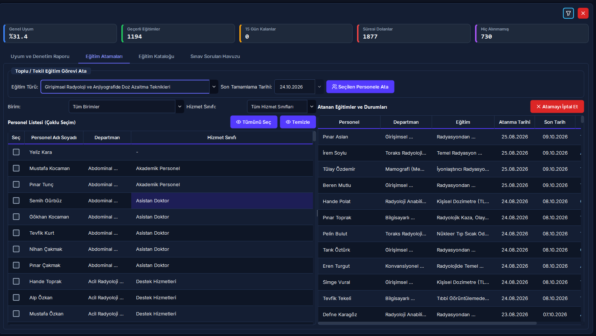
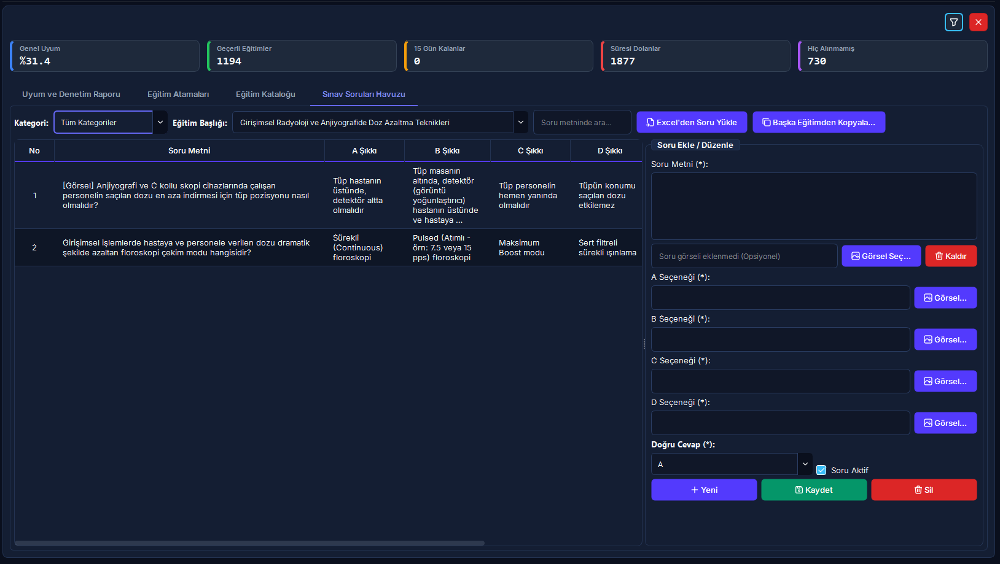
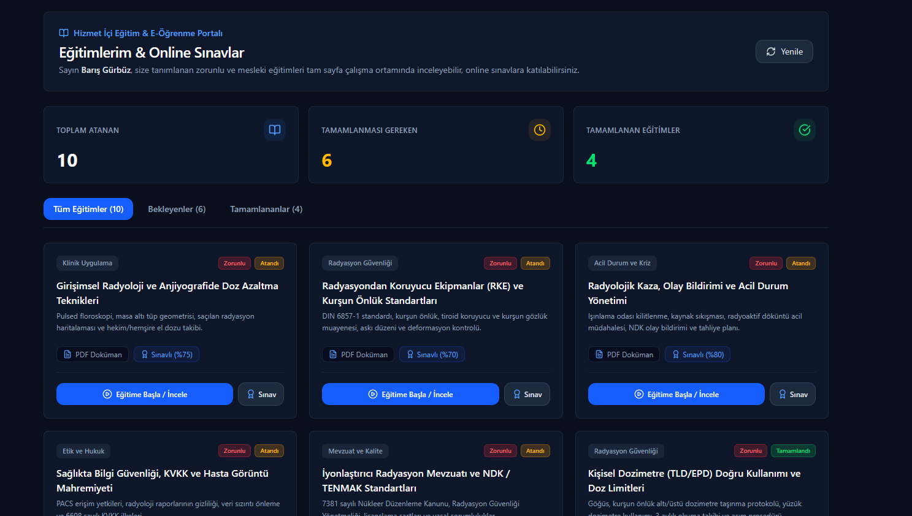
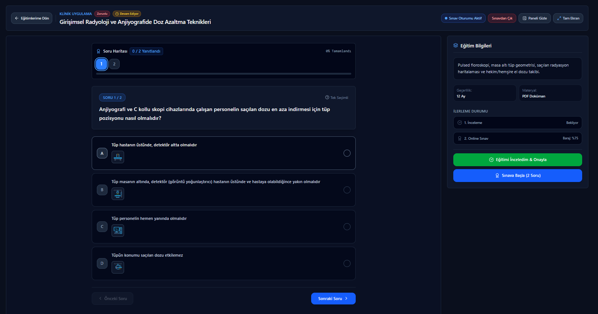

Hizmet İçi Eğitim ve Online Sınav Yönetimi
SKS 6.1 ve 19.02.2025 / 32818 sayılı Radyasyondan Korunma Eğitimlerine İlişkin Yönetmelik ile NDK RSGD-KLV-014 talimatları (TL.RAD.01–TL.RAD.11) kapsamındaki yıllık zorunlu eğitim kataloğunu, toplu personel atamalarını, görselli soru havuzunu, dinamik karıştırmalı online sınavı, 15 gün erken uyarısını ve Kurumsal Uyum Matrisini yönetmenizi sağlar.
Kısa Reçete: Eğitim Kataloğu, Atama, Online Sınav ve Uyum Matrisi
Yıllık zorunlu radyasyon güvenliği eğitimlerinin ve NDK talimatlarının personele atanması, Web Portalından izlenip online sınavla tescillenmesi ve SKS Uyum Matrisinin hazır tutulması.
Eğitim Kataloğu sekmesinden materyali, geçerlilik süresini ve sınav barajını kaydedin; Sınav Soruları Havuzu'ndan soruları ekleyin (veya [Excel'den Soru Yükle]); Eğitim Atamaları'nda personeli seçip [Seçilen Personele Ata] butonuna basın ve Uyum ve Denetim Raporu'ndan [Excel Raporu] alın.
Online sınavda her çalışana soru ve şık sırası rastgele karıştırılarak gelir; baraj geçildiğinde veya sınavsız doküman okuma onaylandığında eğitim başka onaya gerek kalmadan tescillenir ve Uyum Matrisi yeşile döner.
5N1K Kural ve Arayüz Çözümleme Tablosu
Uyum matrisi analizi, NDK talimatları, toplu atama, görselli soru havuzu, karıştırmalı sınav ve 15 gün bildirim motoru.
Kritik Sahada Yanlış Bilinen Kurallar (Mit Avcısı)
Süreç Akış Şeması
Aktif mi?"} E -->|Hayır| F["Okudum / İnceledim Onayı"] E -->|Evet| G["Dinamik Karıştırmalı Sınav (%70 Baraj)"] G -->|Baraj Altı| H["Sınırsız Tekrar Deneme"] end subgraph S3 ["3. AŞAMA: TESCİL, UYUM MATRİSİ VE UYARI"] direction LR I["Otomatik Onay & Tescil"] --> J["4 Renkli Uyum Matrisi & Excel Raporu"] J --> K(["15 Gün Kala Otomatik Hatırlatma"]) end C ==> D F ==> I G -->|Baraj Geçildi| I
- Katalog ve Atama: Eğitim kataloğu (ve yıllık zorunlu 11 NDK talimatı) materyal ve sorularla hazırlanıp birim veya meslek sınıfı bazlı personele atanır.
- Eğitim ve Online Sınav: Çalışan Web Portalından dokümanı okuyup onaylar veya karıştırmalı online sınavda %70 barajını geçene kadar sınırsız deneme yapabilir.
- Tescil ve Uyum Matrisi: Başarılı tamamlanan eğitim otomatik onaylanır, Uyum Matrisi güncellenir ve süresi 15 gün kalanlara günlük korumalı uyarı iletilir.
Arayüz Ekran Görünümleri




Adım Adım İşlem Rehberi
1. Eğitim Kataloğu ve Görselli Soru Havuzu Hazırlama
- [Hizmet İçi Eğitim ve Online Sınav] ekranında Eğitim Kataloğu sekmesine geçin ve [Yeni Form] butonuna tıklayın; eğitim adını, kategoriyi, geçerlilik ayını (yıllık için 12, süresiz için 0), baraj puanını (örneğin %70), [Kurumsal Zorunlu Eğitim] ve [Online Sınav Aktif] kutularını belirleyip [Seç...] ile materyali ekledikten sonra [Kaydet]'e basın ([Aç / Oynat] ile doğrulayabilirsiniz).
- NDK RSGD-KLV-014 kapsamındaki 11 zorunlu talimat (TL.RAD.01–TL.RAD.11) Kalite Dokümanları kategorisinde yıllık doküman eğitimi olarak hazır bulunur; personel portaldan okuma onayı verdiğinde SKS ve RKP uyumu güncellenir.
- Sınav Soruları Havuzu sekmesinde soruları ve şıkları tek tek ekleyebileceğiniz gibi (soru ve A–D şıkları için [Görsel Seç...] / [Görsel...] desteklidir), [Excel'den Soru Yükle] ile şablondan toplu yükleyebilir veya [Başka Eğitimden Kopyala...] ile önceki eğitimden aktarabilirsiniz.
2. Toplu Personel Ataması Yapma ve Uyum Matrisini Raporlama
- Eğitim Atamaları sekmesinde birim ve hizmet sınıfı süzgeçleriyle hedef grubu daraltın, [Tümünü Seç] veya onay kutularıyla personeli işaretleyin; atanacak eğitimi ve son tamamlama tarihini belirleyip [Seçilen Personele Ata] butonuna basın (gerekirse listeden [Atamayı İptal Et] kullanılır).
- Uyum ve Denetim Raporu sekmesinde üstteki 5 KPI göstergesini (Genel Uyum Oranı, Geçerli Eğitimler, 15 Gün Kalanlar, Süresi Dolanlar ve Hiç Alınmamış) izleyip [Filtrele] ile süzün; denetimler için [Excel Raporu] butonuna tıklayın.
3. Web Portalında Video / Doküman İnceleme ve Online Sınav
- Kendisine görev atanan personel Web Portalındaki eğitim panelinden PDF/sunum dokümanlarını açar veya videoları kesintisiz ileri/geri sararak izler.
- Sınav şartı yoksa Okudum / İnceledim onayıyla, sınav aktifse [Sınavı Tamamla ve Gönder] ekranında barajı geçerek eğitimi anında tamamlar ve dijital sertifika/uyum kaydını yeniler.
Sıkça Sorulan Sorular (SSS)
Sınavda barajı aşamayan personel için deneme sayısı kısıtlı mıdır?
Hayır. Personel başarı barajına (varsayılan %70) ulaşana kadar eğitim materyalini tekrar inceleyip sınırsız sayıda yeniden sınava girebilir; her yeni denemede sorular ve A–D şıkları otomatik olarak yeniden karıştırılır.
Uyum Matrisinde "Hiç Alınmamış" görünen çalışanlar kurum puanını etkiler mi?
Evet. Zorunlu eğitimleri henüz hiç tamamlamamış tüm aktif personel mor renkli Hiç Alınmamış durumunda listelenir ve genel uyum yüzdesini doğrudan düşürür; bu gruba öncelikle toplu atama yapılmalıdır.
Online sınavı kapalı olan doküman/video eğitimleri nasıl tamamlanmış sayılır?
Katalogda [Online Sınav Aktif] seçeneği işaretlenmemişse personel eğitim dokümanını veya videosunu inceledikten sonra portaldan okuma onayını verdiğinde eğitim doğrudan tamamlandı olarak tescil edilir.
15 gün erken uyarı bildirimi günde kaç kez gönderilir?
Arka plandaki bildirim kontrolünde mükerrer uyarı koruması bulunur; geçerlilik süresine 15 gün ve daha az kalan eğitimler için aynı personele günde yalnızca bir kez hatırlatma gönderilir.